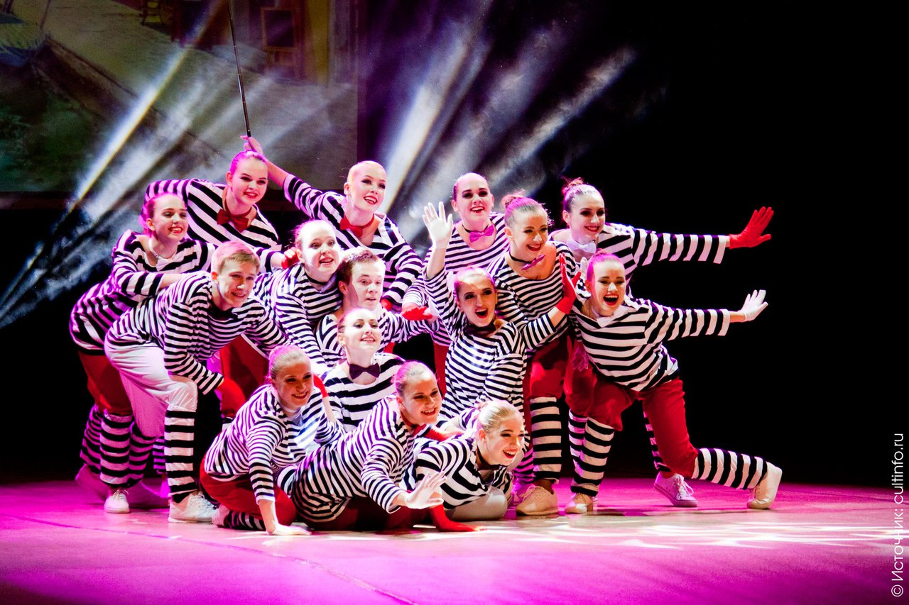
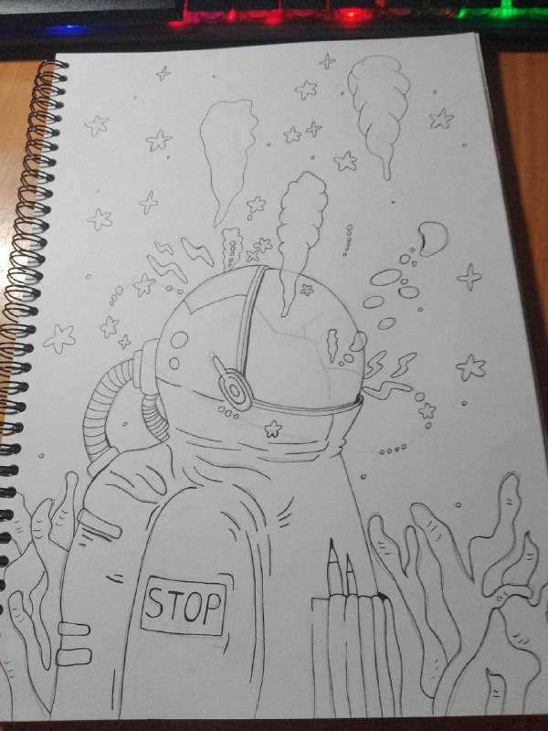

ТАНЦЫ
28.09.2023
Танцы - прекрасное хобби для энергичных людей которые хотят проявить себя с помощью движений.
Я занималась танцами 11 лет в ансамбле современного танца "Талисман". За всё время моих занятий я участвовала во множестве концертов и конкусов. И именно на выступлениях я показывала весь свой потанцевал(танцевальный потанцеал) и как я с душой и трепетом отношусь к своим любимым занятиям, вкладывая в них всю душу и энергию. К сожалению в 2022 году коллектив распался и с тех пор я окончила свой профессиональный путь как танцор.
РИСОВАНИЕ
28.09.2023
Рисование как хобби где можно проявить себя в рисунке и дизайне.
Я вдохнновляюсь другими художниками такие как Собака на дереве, Милана Морозова, Альбедо и другие. Именно наблюдая за творчеством других (почти) людей я постепенно учусь в этом направлении. В художественной школе я никогда не занималась, рисование - это хобби только для души. Но навыки рисования так же пригождаются в моей профессии разработчика. Очень часто перед тем как начать вёрстку сайта, надо сделать его примерный дизайн макет. А без навыков рисования и понимания структуры дизайна это будет сделать очень сложно.